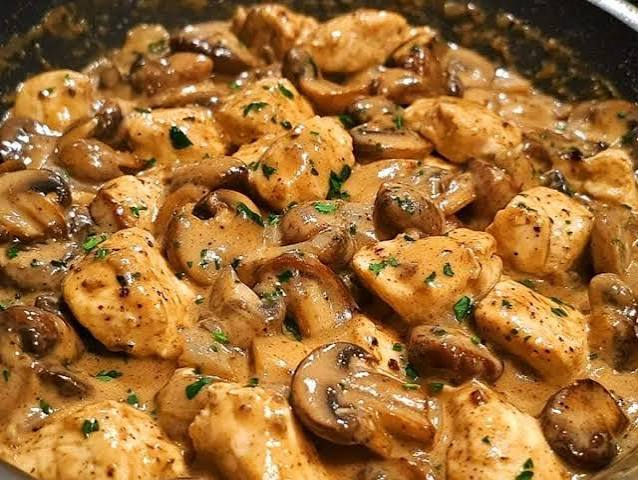

Strogonoff de Frango

Sobre a receita
Cremoso e rápido de fazer, o strogonoff é presente em quase toda mesa brasileira. A versão com frango é mais leve que a tradicional com carne bovina e agrada praticamente todo mundo.
Ingredientes
| Ingrediente | Quantidade |
|---|---|
| Peito de frango em cubos | 500 g |
| Cebola picada | 1 unidade |
| Alho picado | 2 dentes |
| Ketchup | 3 colheres de sopa |
| Mostarda | 1 colher de sopa |
| Creme de leite | 1 caixa |
| Champignon fatiado | 100 g |
| Sal e pimenta | a gosto |
Modo de preparo
- Tempere o frango com sal e pimenta e doure em fogo alto.
- Adicione a cebola e o alho e refogue até ficarem transparentes.
- Junte o champignon, o ketchup e a mostarda, misturando bem.
- Abaixe o fogo e adicione o creme de leite, mexendo até engrossar.
- Sirva imediatamente com arroz branco e batata palha.
Informações da receita
- Tempo de preparo
- 30 minutos
- Rendimento
- 4 porções
- Dificuldade
-
2 de 5 (2 de 5)